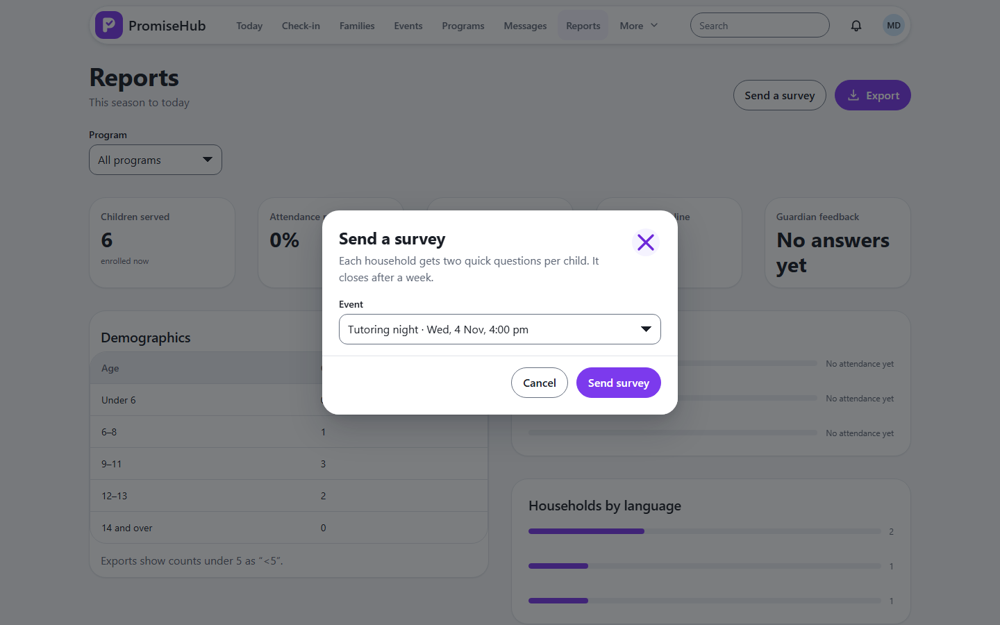
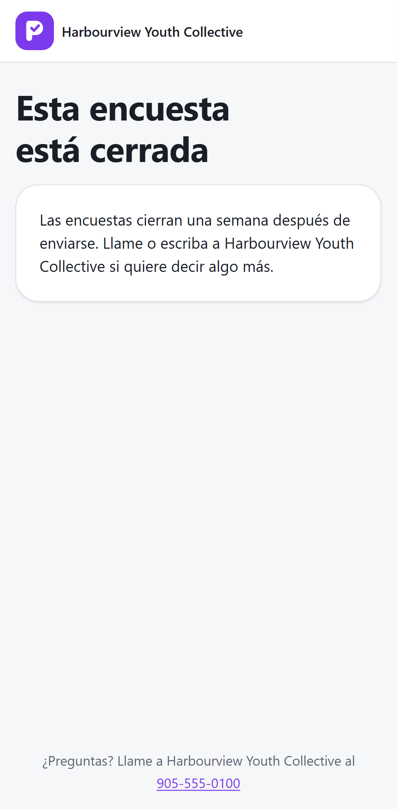

PromiseHub · Video 38
Complete a survey
A minute on a phone, in the family's language
A minute on a phone, in the family's language
Four out of five, a comment, sent.


| Case | Answer |
|---|---|
| Second answer | 409 |
| After a week | Closed |
| Youth worker sends | 403 |
| Reports off | 404 |
Next: set up an organization